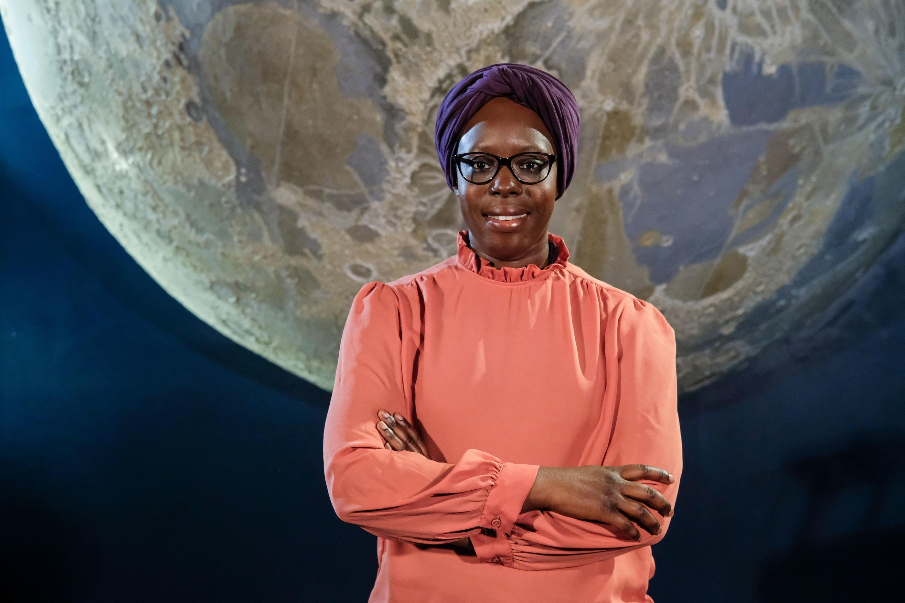

Les femmes importantes de l'astronomie
Fatoumata Kébé, une astrophysicienne

Astrophysicienne française spécialisée dans l’étude des débris spatiaux et des phénomènes célestes. Originaire du Sénégal, Fatoumata Kébé œuvre pour rendre la science, et plus particulièrement l’astronomie, accessible à tous. Passionnée depuis son plus jeune âge par les mystères de l'espace,elle se concentre particulièrement sur la recherche des exoplanètes et l'étude des trous noirs elle réalise également des projets artistiques et prend la plume pour célébrer cet astre qu’elle rêve, un jour, de fouler du pied.
Son parcours commence dès l'enfance.
Son parcours:
- 1993-> à l’âge de huit ans, lors de la consultation d’une encyclopédie en plusieurs tomes, fatoumata s’arrête sur les volumes consacrés à l’astronomie et à l’astrophysique.
- 6 Déc.2016-> elle soutient sa thèse intitulée « étude de l’influence des incréments de vitesse impulsionnels sur les trajectoires de débris spatiaux ».
- 2014->fatoumata est lauréate du prix des jeunes innovateurs de l’union internationale des télécommunications
- 2018->son engagement lui a valu d’être citée par vanity fair parmi les françaises les plus influentes du monde.
- 2021->elle est nommée chevalier de l’ordre national du mérite
Parcours scolaire
- Elle a obtenu un bac S, a fait un master d'ingénierie mécanique et a passé un an au Japon pour participer à la construction de nano-satellites. Au retour, elle a repris ses travaux à l'Observatoire de Paris.
Pour aller plus loin